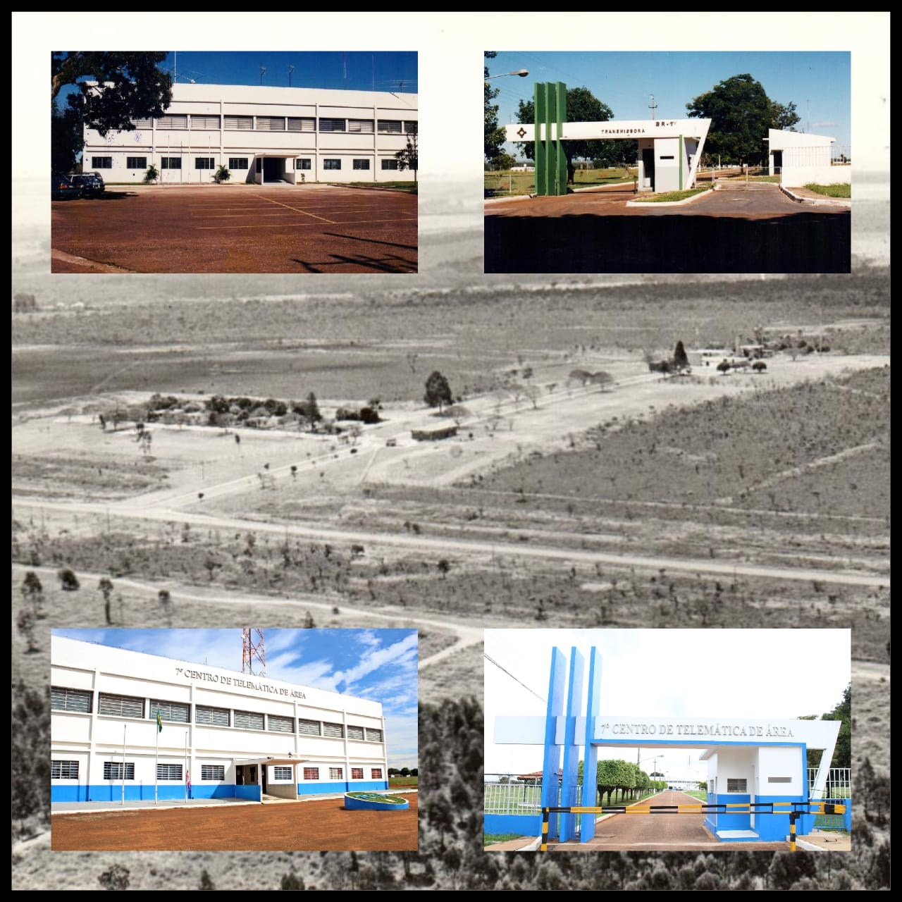
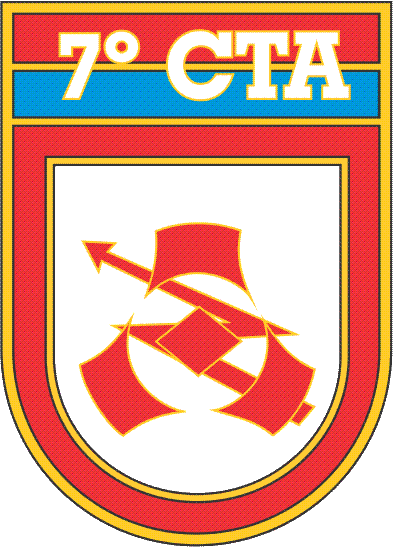

História
Em 14 de março de 1997, o então Ministro de Estado do Exército transformou, através da Portaria Ministerial nº 140, a 11ª Seção do Serviço Rádio do Ministério do Exército (SSRMEx) no 7º Centro de Comunicações e Telemática de Área (CCTA), com sede em Brasília - DF e vinculado administrativamente ao Centro de Comunicações e Telemática do Exército (CCTEx).
Em 13 de março de 1998, a Portaria Ministerial nº 131 alterou a denominação dos Centros de Comunicação e Telemática de Área (CCTA) para Centros de Telemática de Área (CTA), passando esta Organização Militar (OM) a ser chamada de 7°CTA, denominação que permanece até hoje.
|

|
PATRONO
- Marechal Rondon

Brasão
-
- 